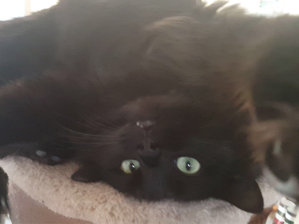
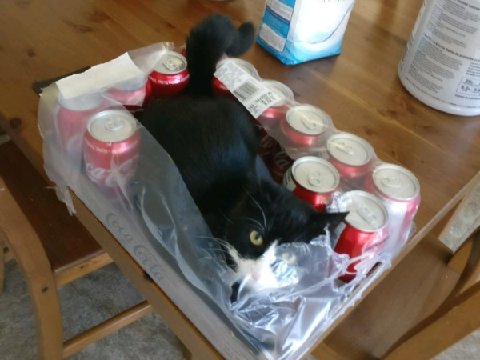
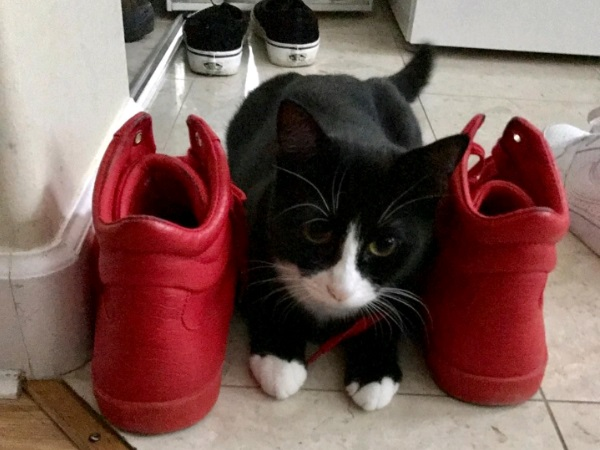
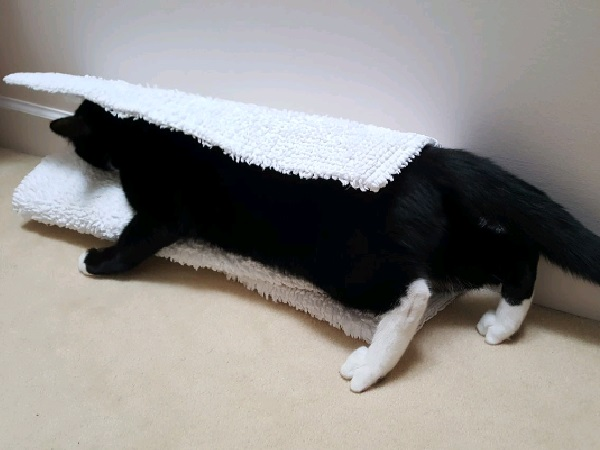

your content
Pepper
Pepper is an older cat who loves to climb trees in pursuit of birds! He's very fast for his age and enjoys the rush the chases give him. While he loves chasing and the outdoors, he's also a very unique cat as he prefers to sleep and lay on his back.



Momo
Momo is an energetic young girl from Titahi Bay. She enjoys exploring her house and outside but while she is an energetic explorer, she also loves to cuddle and snuggle up to her humans! You can either find her exploring, hiding in some interesting places or on someone's lap fast asleep.
Pepper
...